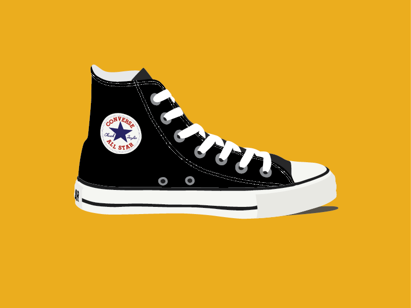
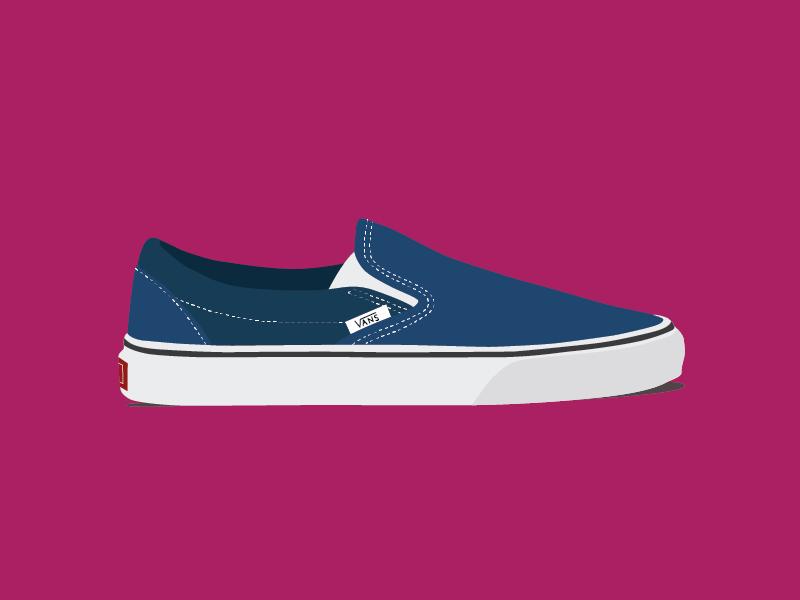
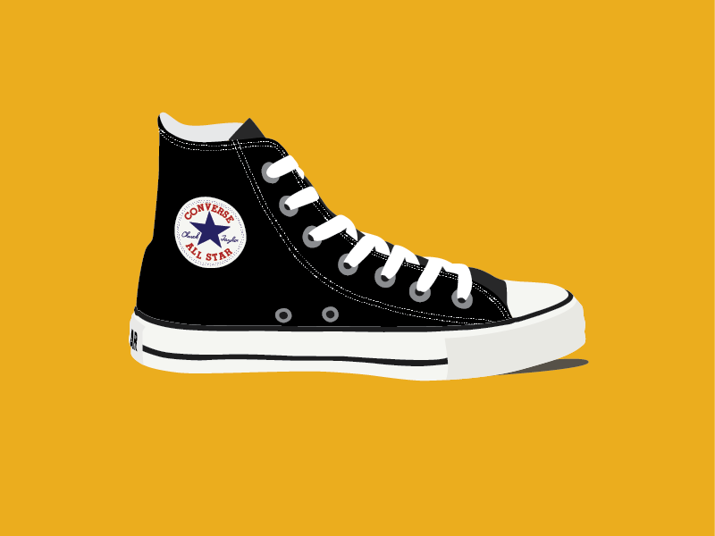
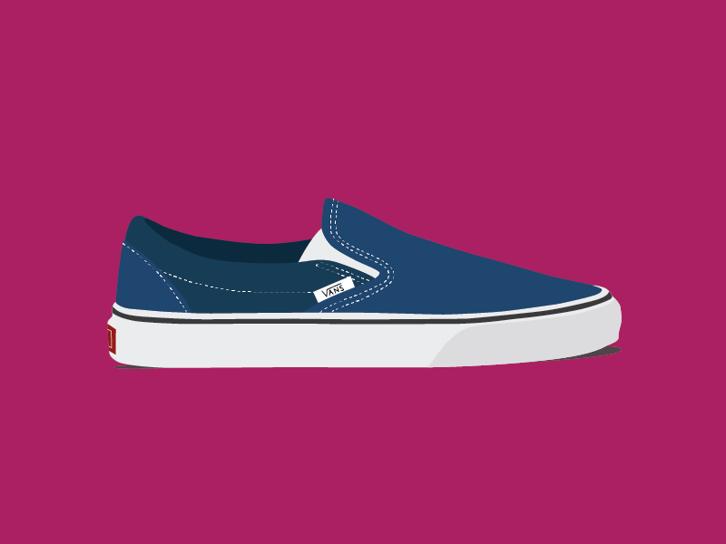

Vintage Kicks Are In
For the intermediate interactive coding class in Spring 2015, I had to code a slider and quiz and then write and design the content on the slider. I wanted it to be similar to what a lot of publications have online -- a slider with a list of their favorite salad dressing recipes or a list of cool winter fashion trends. You get the idea. So I made mine about sneakers that were making a comeback, and I illustrated all of them of course. You can also rate the sneakers if you have like.
If you would rather view the live slider, check it out here.
 




 by Carolyn Bahar
by Carolyn Bahar